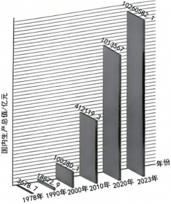
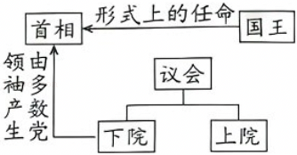
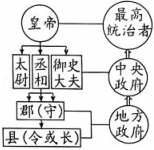
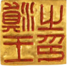
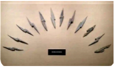
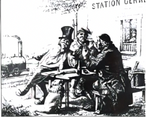

2025年北京市西城区中考历史试卷 原卷解析
2025年北京市西城区中考历史试卷
参考答案与试题解析
一．选择题（共16小题）
题号 | 1 | 2 | 3 | 4 | 5 | 6 | 7 | 8 | 9 | 10 | 11 |
答案 | B | B | D | D | C | C | A | A | C | B | D |
题号 | 12 | 13 | 14 | 15 | 16 |
答案 | A | B | A | D | B |
一、单选选择题（本部分共16题，每题1.5分，共24分。在每题列出的四个选项中，选出最符合题目要求的一项）
1．（1.5分）1973年考古人员在浙江东部地区发现了距今约7000年的人类活动遗址，其发现包括：干栏式建筑遗迹、碳化稻粒、石磨盘、炊器、渔猎工具、象牙雕刻器等。说明该遗址（ ）
①已经采取定居的生活方式
②居民掌握了雕刻等技术
③进入到国家的社会形态
④印证我国出现了原始农业
A．①②③B．①②④C．①③④D．②③④
【答案】B
【分析】本题考查河姆渡原始居民的生活状况。
【解答】干栏式建筑遗迹的发现表明河姆渡居民有了固定的居住场所，说明已经采取定居的生活方式，①正确；象牙雕刻器的出土，充分证明居民掌握了雕刻等技术，②正确；河姆渡遗址距今约7000年，当时尚未进入国家的社会形态，③错误；碳化稻粒、石磨盘、炊器的发现，说明河姆渡居民已经种植水稻，有了粮食加工工具和炊具，印证我国出现了原始农业，④正确。综上，①②④正确，选择B项，排除ACD项。
故选：B。
2．（1.5分）某同学将三国两晋南北朝时期的部分史实通过“归类”方式进行整理，如表中①②③处应依次填写（ ）
| 史实 |
政治 | 北魏时期的①______，促进了民族交融 |
经济 | 魏晋时期南方地区农业技术提高，粮食产量提升，缫丝、造纸等方面显著发展，南朝时的建康成为商业活跃大都市。体现了②______ |
科技文化 | 祖冲之的圆周率数值；贾思勰的③______；王羲之的《兰亭集序》等 |
A．商鞅变法、统一多民族国家的建立、《本草纲目》
B．孝文帝改革、江南地区的开发、《齐民要术》
C．“贞观之治”、政权分立、《资治通鉴》
D．王安石变法、经济重心完成南移、《天工开物》
【答案】B
【分析】本题考查三国两晋南北朝时期的政治、经济、科技文化史实，掌握相关基础知识。
【解答】结合知识可知，北魏促进民族交融的是孝文帝改革；魏晋南北朝时期，南方农业、手工业、商业发展体现江南地区开发；贾思勰的著作是《齐民要术》。故B符合题意；商鞅变法是战国、《本草纲目》是明朝，排除A；“贞观之治”是唐朝盛世局面、《资治通鉴》是北宋的史学著作，排除C；王安石变法发生在北宋时期、经济重心南移完成于南宋、《天工开物》是明朝时期的科技著作，排除D。
故选：B。
3．（1.5分）我国古代兴修了诸多工程。长城与大运河这两项工程的建设都（ ）
A．推动了对外贸易的发展
B．促进了南北方经济文化交流
C．奠定了隋唐时期的繁荣
D．体现了古代劳动人民的智慧
【答案】D
【分析】本题考查隋朝大运河和明长城，识记隋朝大运河和明长城相关知识。
【解答】根据所学知识可知，隋朝大运河是古代世界上最长的运河，是在已有的天然河道和古运河基础上开凿的；明代长城以城墙为主体，由天隘、城台、烽火台等组成，沿线设立卫所，驻守军队，开展屯田，进行生产，并修建了相连的道路，形成一个完整的军事防御体系；隋朝大运河和明长城都是我国古代劳动人民勤劳与智慧的结晶，D项符合题意；明长城是为了防御北方蒙古族南扰，隋朝大运河的开通，加强了南北地区政治、经济和文化交流与对外贸易无关，排除A项；大运河促进了南北方经济文化交流，排除B项；隋朝大运河奠定了隋唐时期的繁荣，排除C项。
故选：D。
4．（1.5分）某同学在阅读元朝王祯的《农书》时看到如下描述：“造板木作印盔，雕板木为字……然后排字作行……使坚牢，字皆不动，然后用墨刷印之。”这段文字记录了我国一项重大发明的改进，该发明是（ ）
A．造纸术B．火药C．指南针D．印刷术
【答案】D
【分析】本题考查活字印刷术，掌握相关的基础知识。
【解答】据题干并结合所学可知，北宋毕昇发明活字印刷术。他用胶泥刻字，然后用火烧制，制成泥活字。材料反映的是印刷术。故D符合题意；造纸术、火药、指南针都与排字作行无关，排除ABC。
故选：D。
5．（1.5分）如图是现藏于斯里兰卡国家博物馆的《布施锡兰山佛寺碑》，碑上刻有中文、泰米尔文和波斯文三种文字，碑文如图所示（部分）。该文物可用于研究（ ）
布施锡兰山佛寺碑 | 部分碑文：大明皇帝遣太监郑和、王贵通等，昭告于佛世尊曰……时永乐七年岁次己丑二月甲戌朔日谨施。 |
A．明朝皇权的不断强化B．明朝民族交融的加强
C．明朝对外关系的成就D．殖民者在亚洲的扩张
【答案】C
【分析】本题考查了郑和下西洋，要求学生阅读史料并结合所学作出回答。
【解答】A.该碑文主要涉及对外布施活动，未体现明朝皇权强化的相关内容，与皇权强化无关，错误。
B.碑文中的活动是明朝与斯里兰卡的交往，不属于国内民族交融范畴，与民族交融无关，错误。
C.碑文提到郑和等人代表明朝对锡兰山佛寺布施，反映了明朝的对外交流，可用于研究明朝对外关系成就，正确。
D.此碑文是明朝官方的对外活动记录，未涉及殖民者在亚洲的扩张内容，与殖民扩张无关，错误。
故选：C。
6．（1.5分）2024年7月，第46届世界遗产大会通过决议，将“北京中轴线——中国理想都城秩序的杰作”列入《世界遗产名录》。中国世界遗产总数达59项。结合“明清北京城平面图”找出下列属于“北京中轴线”遗产构成要素的建筑（ ）
①永定门
②西直门
③故宫
④钟鼓楼

A．①②③B．①②④C．①③④D．②③④
【答案】C
【分析】本题考查北京紫禁城，掌握相关的基础知识。
【解答】据图片看出，永定门、故宫、钟鼓楼都在北京的中轴线上。①③④正确，故C符合题意；西直门位于北京西北部，不在北京的中轴线上，②错误，排除ABD。
故选：C。
7．（1.5分）某班同学要制作中国人民近代反侵略斗争主题展板，已经收集了左宗棠收复新疆、台湾军民抗日武装斗争等内容，在这个展板中还可以使用的内容有（ ）
①林则徐虎门销烟
②太平天国运动
③邓世昌英勇抗敌
④“黄花岗起义”
A．①②③B．①②④C．①③④D．②③④
【答案】A
【分析】考查中国近代史上反侵略斗争的重要事件。
【解答】根据所学可知，林则徐虎门销烟显示了中华民族反抗外来侵略的坚强意志；太平天国运动沉重的打击了清朝的统治和外国侵略势力，谱写了中国近代史上壮烈的一章；邓世昌是甲午中日战争中北洋水师的重要将领，在黄海海战中英勇牺牲，是中国人民反侵略斗争的英雄人物，因此①②③可以使用，A项正确；④“黄花岗起义”是1911年孙中山领导的资产阶级革命运动，目的是推翻清朝，建立民主共和国，属于反封建、反专制的苗金斗争，不属于反侵略斗争，④不可以使用，排除BCD项。
故选：A。
8．（1.5分）有学者说：“民国的建立并没有带来和平、秩序和统一……采取共和体制而带来的政治面貌，并不足以革新国家；还需要有一些更基本的东西来唤醒国家及人民。”在民国初期，体现出“唤醒国家及人民”的是（ ）
①新文化运动
②五四运动
③南京国民政府成立
④东北易帜
A．①②B．①④C．②③D．③④
【答案】A
【分析】本题主要考查民国初期的思想解放运动，要求运用所学分析解读题干信息。
【解答】新文化运动是一场思想文化革新运动，它提倡民主与科学，反对专制和愚昧、迷信；提倡新道德，反对旧道德；提倡新文学，反对旧文学。新文化运动极大地冲击了封建思想的统治地位，使中国人民接受了一次民主与科学的洗礼，为马克思主义在中国的传播创造了有利条件，起到了“唤醒国家及人民”的作用，①正确；五四运动是一场以先进青年知识分子为先锋、广大人民群众参加的彻底反帝反封建的伟大爱国革命运动，是一场中国人民为拯救民族危亡、捍卫民族尊严、凝聚民族力量而掀起的伟大社会革命运动，是一场传播新思想新文化新知识的伟大思想启蒙运动和新文化运动，它推动了中国社会进步，促进了马克思主义在中国的传播，促进了马克思主义同中国工人运动的结合，为中国共产党成立做了思想上干部上的准备，体现了“唤醒国家及人民”，②正确，A项符合题意。南京国民政府成立代表着大地主大资产阶级的利益，它的成立并没有从根本上“唤醒国家及人民”，③错误；东北易帜标志着南京国民政府在形式上基本统一了全国，主要是在政治统一方面有意义，并非“唤醒国家及人民”，④错误，排除BCD项。
故选：A。
9．（1.5分）如图版画体现了历史上某一时期中国共产党主张，在这一主张下（ ）

A．与中国国民党合作开展了大革命
B．召开了遵义会议挽救了中国革命
C．抗日战争已经成为了全民族抗战
D．毛泽东赴重庆谈判争取和平建国
【答案】C
【分析】本题考查全民族坚持抗战，掌握相关的基础知识。
【解答】据图片信息“巩固团结，抗战到底”“1938”并结合所学可知，1937年9月，国民党中央通讯社公开发表了中共中央提交的国共合作宣言，蒋介石也发表谈话，实际上承认了中国共产党的合法地位。这样，以国共合作为主体的抗日民族统一战线正式建立，国共团结御侮、全民族抗战的局面开始形成。故C符合题意；与中国国民党合作开展大革命是1924﹣1927年，排除A；召开遵义会议挽救了中国革命是1935年，排除B；毛泽东赴重庆谈判争取和平建国是1945年，排除D。
故选：C。
10．（1.5分）如图中展示了众多北京老字号招牌。其中“北京同仁堂、全聚德、张一元”等老字号，均在某一历史时期由私营企业转变为国营企业。这是因为（ ）

A．土地改革的顺利推进
B．社会主义改造的完成
C．一五计划推动工业发展
D．人民代表大会制度确立
【答案】B
【分析】本题考查了三大改造，要求学生阅读史料并结合所学作出回答。
【解答】A.土地改革是变地主土地所有制为农民土地所有制，针对农业，与私营企业变国营无关，错误。
B.社会主义改造中对资本主义工商业采取公私合营等方式，将私营企业转为国营，符合题意，正确。
C.一五计划重点是发展重工业，主要推动工业建设，不涉及私营企业性质转变，错误。
D.人民代表大会制度是政治制度，确立的是国家权力机关，与企业性质变化无关，错误。
故选：B。
11．（1.5分）如图《中国国内生产总值变化情况》数据图可以用来研究（ ）
①社会主义建设艰辛探索
②新中国外交事业的成就
③当代中国社会巨大发展
④市场经济推动国力增强

A．①②B．②④C．①③D．③④
【答案】D
【分析】本题考查改革开放的成就，掌握相关的基础知识。
【解答】图片反映从1978年到2023年，我国经济迅速发展。结合所学可知，1978年中共十一届三中全会以后，党和政府实行改革开放政策，促进了经济发展；1992年，中国共产党第十四次全国代表大会明确提出要建立社会主义市场经济体制。把社会主义基本制度和市场经济结合起来，建立社会主义市场经济体制，有利于实现经济的协调发展和稳定高速增长，对现代化建设有巨大推动作用，使我国的经济实力明显增强。图片可以用来研究当代中国社会巨大发展、市场经济推动国力增强。③④正确，故D符合题意；社会主义建设艰辛探索是1956﹣1976年，与图片时间不符；图片反映的是经济发展，与外交事业没有直接关系。①②错误，排除ABC。
故选：D。
12．（1.5分）拜占庭帝国在翻译和注释欧洲古典作品过程中，保护了大量的古典希腊罗马著作并形成规范的译本体系。由此可知，拜占庭帝国（ ）
A．为文艺复兴提供了精神营养
B．推动了西方法律体系的建设
C．直接促进西欧各地城市发展
D．成为联系东西方经济的桥梁
【答案】A
【分析】本题主要考查拜占庭帝国在文化传承方面的作用，识读题干材料是解答本题的关键。
【解答】据“拜占庭帝国在翻译和注释欧洲古典作品过程中，保护了大量的古典希腊罗马著作并形成规范的译本体系。”可知，拜占庭帝国通过翻译和注释古典作品，保护了大量希腊罗马著作，形成了规范的译本体系。由此可以推断其对后世文化发展的影响，尤其是对文艺复兴的推动作用。文艺复兴是指14世纪至17世纪初，欧洲文化重新发现并弘扬古希腊罗马文化的过程。拜占庭帝国保存了大量古典文献，并在后期将这些知识传入西欧，为文艺复兴提供了重要的思想和文化基础，A项正确；虽然拜占庭帝国确实有《查士丁尼法典》等法律文献，但题干强调的是对古典希腊罗马著作的保护和翻译，与西方法律体系建设无直接联系，排除B项；城市发展涉及经济、社会等多方面因素，题干并未提到拜占庭帝国对西欧城市发展的直接影响，且“直接促进”说法过于绝对，排除C项；拜占庭帝国确实在东西方贸易中扮演重要角色，但题干主要讲的是对古典文化的保护与翻译，与经济桥梁功能无直接关系，排除D项。
故选：A。
13．（1.5分）“从前，世界上发生的各种事情彼此间没有任何联系。每一种活动仅引起当地人的注意。但自那以后，一切重大事件都开始联结为一个整体”。与上述“自那以后”对应的事件是（ ）
A．查理曼帝国一分为三B．新航路的开辟
C．资本主义制度的确立D．早期殖民掠夺
【答案】B
【分析】本题考查了新航路开辟，要求学生阅读史料并结合所学作出回答。
【解答】新航路的开辟打破了世界各地的孤立状态，使欧洲与亚洲、非洲、美洲之间建立了直接的商业联系，开启了全球化的进程。这与题干中描述的“一切重大事件都开始联结为一个整体”高度吻合，B正确；查理曼帝国一分为三这一事件主要涉及欧洲内部的权力划分，并未直接导致世界各地区间的联系加强，排除A；虽然资本主义制度的确立对世界历史产生了深远影响，但它更多体现在经济和社会制度层面，并非直接导致世界各地区联系加强的关键事件，排除C；早期殖民掠夺确实加强了世界各地区的联系，但它是新航路开辟后的一个结果，而非起始点。因此，它不完全符合题干中“自那以后”的时间节点，排除D。
故选：B。
14．（1.5分）君主立宪制是世界近代以来重要的政治体制之一。如图是有同学对某一国家政体设计的结构图示。该国是（ ）

A．英国B．美国C．法国D．俄国
【答案】A
【分析】本题考查了英国代议制，要求学生阅读史料并结合所学作出回答。
【解答】国王形式上任命首相，说明国王“统而不治”，议会分为上院和下院，首相由多数领袖产生，这符合英国责任内阁制的特点，A正确；美国没有国王，排除B；法国实行的也是民主共和制，排除C；俄国沙皇有实权，排除D。
故选：A。
15．（1.5分）工业革命使工业化国家发生了重大变化。变化包括（ ）
①奠基近代科学
②人口增长迅速
③推广大众教育
④贫富分化加剧
A．①②③B．①②④C．①③④D．②③④
【答案】D
【分析】本题考查了工业化国家的变化，要求学生阅读史料并结合所学作出回答。
【解答】①奠基近代科学：虽然工业革命促进了科学技术的发展，但近代科学的奠基并非直接由工业革命完成。近代科学的起源可以追溯到更早的时期，如文艺复兴和启蒙运动时期的科学探索。因此，这一选项并不直接归因于工业革命；②人口增长迅速：工业革命期间，由于农业生产力的提高和城市化进程的加速，人口确实出现了快速增长。工厂提供了更多的就业机会，吸引了大量农村人口迁移到城市，从而推动了人口的增长。这一变化与工业革命有直接的关联；③推广大众教育：随着工业革命的进行，对技术工人和管理人才的需求增加，这促使各国开始重视并推广大众教育。教育的普及不仅提高了劳动者的素质，也为工业发展提供了必要的人才支持。因此，这一变化也是工业革命带来的重要结果；④贫富分化加剧：工业革命在创造巨大财富的同时，也导致了社会贫富差距的扩大。工厂主和资本家积累了大量财富，而工人阶级则往往面临低工资和恶劣的工作条件。这种贫富分化的加剧是工业革命时期一个显著的社会问题，综上可知，D正确，排除ABC。
故选：D。
16．（1.5分）有学者提及一位近现代历史人物时说：他的哲学观是以关爱、真理、非暴力为主；政治观以争取国家独立为主；社会观以主张民族团结，各阶层平等为主。这位历史人物是（ ）
A．玻利瓦尔B．甘地C．扎格鲁尔D．卡德纳斯
【答案】B
【分析】本题考查了非暴力不合作运动，要求学生阅读史料并结合所学作出回答。
【解答】甘地是印度的民族领袖，以非暴力不合作运动著称，其哲学观确实包含关爱、真理和非暴力，同时他也积极争取印度独立，并倡导民族团结和平等，B正确；玻利瓦尔是拉丁美洲独立运动的领导人，主要致力于南美洲的解放事业，虽然涉及国家独立，但与题干中强调的非暴力和民族团结特点不吻合，排除A；扎格鲁尔是埃及独立运动的领导人，主要关注埃及的独立和民主改革，虽然也涉及国家独立和社会变革，但缺乏题干中提到的非暴力和民族团结的具体特征，排除C；卡德纳斯是墨西哥的改革家，主要推行了一系列社会和经济改革，虽然涉及民族团结和社会平等，但其哲学观和政治观与题干描述不符，排除D。
故选：B。
二、非选择题（本部分共3题，共36分。）
17．（12分）民族文化宫正在举办的“铸牢中华民族共同体意识文物古籍展”，展现了中华民族共同体的发展历程。
【探究一：大一统秩序的奠基】
材料一
①分天下以为三十六郡，郡置守、尉、监。更名民曰“黔首”。 ——《史记•秦始皇本纪》 |

②秦朝政治建制示意图 |
③半两钱（秦朝） |
④迁陵县户籍登记：黔首（百姓）毋（无）分秦楚，皆以秦律治之。——里耶秦简J1（16）5号 |

⑤滇王之印（西汉） |
⑥胡汉共耕图（内蒙古和林格尔汉墓壁画） |
（1）材料一中属于实物史料的两则是 ③⑤ ，属于文献史料的两则是 ①④ 。（填序号）请选择其中任意一则，结合所学，围绕“秦汉时期奠基大一统的秩序”这一主题进行介绍。（要求：史论结合）
【探究二：共享经济之利】
材料二：宋辽澶渊之盟后，交界地区设榷场，宋朝用茶、丝换辽马匹，西夏用青盐换宋粮布，官府设置官员稽查征税，以“平等交易”互通有无。南宋时“苏湖熟，天下足”，北方移民南迁推广曲辕犁和占城稻种植技术，江南“稻麦复种”技术北传到金朝统治区，汉、女真、契丹人民共同改进农具。纺织领域，宋人改良海南黎族的“吉贝”为江南“赶弹工艺”：元初黄道婆结合黎族、汉族的技术革新棉纺工艺，推动棉花种植向北方扩展，引发全国棉纺织工艺革新。
（2）依据材料二，概括辽宋夏金元时期“共享经济之利”的表现。结合所学，分析其带来的影响。
【探究三：边疆治理与中华民族共同体构建】
材料三：元世祖封八思巴为帝师，领宣政院事，掌吐蕃军民之政，置十三万户，设驿站通中原。
——《元史•释老传》
明廷设乌思藏都司，敕封噶举派大宝法王，茶马互市“汉藏共市，民不知兵”。
——《明史•西域传》
《钦定藏内善后章程》定驻藏大臣与达赖共治，金瓶掣签以定活佛转世，满蒙联姻固边疆，汉军屯藏促农垦。
——《清高宗实录》
（3）依据材料三，说出元明清时期边疆治理的共同点。将表格中①②③补充完整。
朝代 | 治理机构/官职 | 典型措施 | 民族交融表现 |
元 | ① 宣政院 | 设置驿站 | 广设驿站，促进各民族商贸交流 |
明 | 乌思藏都司 | 敕封法王 | ② 汉藏互市，促进民族经济文化交流 |
清 | ③ 驻藏大臣 | 册封达赖与班禅金瓶掣签 | 满蒙联姻，巩固边疆；汉军屯藏，促农垦 |
【答案】（1）实物史料：③⑤；文献史料：①④。
示例介绍（以③半两钱为例）：半两钱的统一，结束了战国时期货币混乱的局面，有利于国家对经济的管理，巩固了大一统秩序。
（2）表现：边境互市贸易；农业技术交流；手工业技术革新与传播。
影响：促进了经济发展；推动了民族交融；巩固了多民族国家的统一等。
（3）共同点：设置专门机构；利用宗教进行管理；加强边疆与内地联系。
表格填空：①宣政院；②汉藏互市，促进民族经济文化交流；③驻藏大臣。
【分析】本题主要考查统一多民族国家的巩固和发展，提取材料信息并结合所学知识分析作答。
【解答】（1）史料类型填空：实物史料是指各类文物、古迹、遗址等，所以属于实物史料的两则是③⑤；文献史料是指以文字形式出现的史料，属于文献史料的两则是①④。
示例介绍（以③半两钱为例）：结合所学知识，半两钱的统一，结束了战国时期货币混乱的局面，有利于国家对经济的管理，巩固了大一统秩序。或以①分天下以为三十六郡，郡置守、尉、监。更名民曰“黔首”为例。秦始皇统一六国后，为加强中央集权，在地方推行郡县制。郡是直属于中央的地方行政机构，郡守、郡尉、郡监分别负责行政、军事和监察。郡县制的推行，打破了传统的贵族分封制，加强了中央对地方的垂直管理，有利于国家的统一和稳定，为大一统秩序奠定了地方行政制度基础。
（2）表现：根据材料“宋辽澶渊之盟后，交界地区设榷场，宋朝用茶、丝换辽马匹，西夏用青盐换宋粮布，官府设置官员稽查征税，以‘平等交易’互通有无”可得出，边境互市贸易；根据材料“北方移民南迁推广曲辕犁和占城稻种植技术，江南‘稻麦复种’技术北传到金朝统治区”可得出，农业技术交流；根据材料“纺织领域，宋人改良海南黎族的‘吉贝’为江南‘赶弹工艺’：元初黄道婆结合黎族、汉族的技术革新棉纺工艺，推动棉花种植向北方扩展，引发全国棉纺织工艺革新”可得出，手工业技术革新与传播。
影响：结合所学知识，可从促进了经济发展；推动了民族交融；巩固了多民族国家的统一等方面分析。
（3）共同点：根据材料“元世祖封八思巴为帝师，领宣政院事”“明廷设乌思藏都司”“驻藏大臣”可得出，设置专门机构；根据材料“敕封噶举派大宝法王”“达赖”可得出，利用宗教进行管理；根据材料“设驿站通中原”“茶马互市‘汉藏共市，民不知兵’”“满蒙联姻固边疆，汉军屯藏促农垦”可得出，加强边疆与内地联系。
表格填空：①宣政院：元朝设立宣政院掌管吐蕃（今西藏）军民之政，标志着中央政府对西藏正式行使行政管辖。②汉藏互市，促进民族经济文化交流：明朝设乌思藏都司并敕封法王，通过茶马互市等形式加强汉藏交流。③驻藏大臣：清朝设置驻藏大臣，与达赖共治西藏，通过金瓶掣签等制度加强对西藏的管理。
故答案为：
（1）实物史料：③⑤；文献史料：①④。
示例介绍（以③半两钱为例）：半两钱的统一，结束了战国时期货币混乱的局面，有利于国家对经济的管理，巩固了大一统秩序。
（2）表现：边境互市贸易；农业技术交流；手工业技术革新与传播。
影响：促进了经济发展；推动了民族交融；巩固了多民族国家的统一等。
（3）共同点：设置专门机构；利用宗教进行管理；加强边疆与内地联系。
表格填空：①宣政院；②汉藏互市，促进民族经济文化交流；③驻藏大臣。
18．（13分）【中国现代化探索】
材料一：某同学阅读近代专著，摘抄如下内容
章节名称 | 相关探索 | 历史事件 |
近代化一小步 | “购船置械，可谓之变器”。19世纪60年代筹办江南机器制造总局、福州船政局，后创办轮船招商局、开平煤矿。 | ① 洋务运动 |
变与不变的哲学 | “变”与“新”相连。公车上书一强学会—康有为历次上皇帝书一保国会等。 | ② 戊戌变法 |
揖美追欧，旧邦新造 | “皇帝倒了，辫子割了”。《中华民国临时约法》规定了“中华民国之主权属于国民全体”，肯定了资产阶级民主共和制度和民主自由原则。 | ③ 辛亥革命 |
（1）依据材料一，结合所学，任选一个序号，写出其反映的历史事件。从进步性及局限性两个方面对其进行评价。
材料二
| 割据地区一天一天扩大，土地革命一天一天深入，民众政权的组织一天一天推广，红军和赤卫队一天一天壮大，原因就在于湘赣边界的共产党的政策是正确的……集中红军相机应付当前之敌，反对分兵，避免被敌人各个击破……在四围白色政权中间的红色割据，利用山险是必要的。 ——毛泽东 |
 | 接到敌情后，党组织群众削竹钉、用竹钉阵让敌人无法通过，壮年到儿童都行动起来在通向哨口的山路上连夜修筑了滚木擂石、壕沟、射击掩体等五重防线。 ——黄洋界保卫战后通讯稿 |
（2）依据材料二，结合所学，分析井冈山道路取得成功的原因。
材料三
时期 | 1949﹣1978 | 1978﹣2012 | 2012至今 |
探索成就 | 1953年起集中主要力量发展重工业，重点布局钢铁、机械、能源等基础产业，逐步建立起自主的工业体系，打破对西方技术的依赖。 | “我们搞的现代化，是中国式的现代化。我们建设的社会主义，是有中国特色的社会主义。”“逐步实现工业、农业、国防、和科学技术现代化”。 | 2012年通过建档立卡识别9899万贫困人口。2020年，832个贫困县全部摘帽，贫困地区人均可支配收入增至12588元，较2013年增长2.8倍。 |
史事 | A ③ | B ② | C ① |
（3）将下列史事填入相应位置。（填序号）
①打赢脱贫攻坚战
②改革开放的启动与探索
③第一个五年计划
（4）综合以上材料，结合史实谈谈你对中国式现代化的认识。
【答案】（1）示例：①洋务运动。进步性：引进西方先进技术，创办近代企业，客观上促进了中国民族资本主义的产生，开启了中国近代化进程；局限性：只学习技术，不改变封建制度，最终失败。
（2）原因：中国共产党政策正确；群众广泛支持；利用有利的地理环境；红军战术灵活。
（3）A.③；B.②；C.①。
（4）认识：中国式现代化立足国情，如井冈山道路结合农村实际，改革开放符合中国发展需求；注重人民利益，脱贫攻坚战体现以人民为中心。
【分析】本题主要考查中国现代化探索，要求学生提取材料信息并结合所学知识作出回答。
【解答】（1）若选①：历史事件是洋务运动。进步性：洋务运动引进了西方先进的科学技术，使中国出现了第一批近代企业，客观上促进了中国民族资本主义的产生，是中国近代化的开端。局限性：洋务运动的根本目的是维护和巩固清政府的统治，只学习西方技术，而不改变封建制度，没有使中国走上富强的道路。
若选②：历史事件是戊戌变法。进步性：戊戌变法在思想文化方面产生了广泛而持久的影响，在社会上起到了思想启蒙的作用。局限性：戊戌变法依靠没有实权的光绪帝，以失败告终，未能改变中国半殖民地半封建社会的性质。
若选③：历史事件是辛亥革命。进步性：辛亥革命推翻了清王朝的反动统治，宣告中国两千多年君主专制制度的终结；开创了完全意义上的近代民族民主革命；极大推动了中华民族的思想解放，使民主共和观念深入人心。局限性：辛亥革命的胜利果实被袁世凯窃取，中国半殖民地半封建社会的性质没有得到根本改变，反帝反封建的革命任务没有完成。
（2）根据材料二及所学知识，中国共产党政策正确，如开展土地革命，调动了农民的革命积极性，使根据地不断巩固和扩大；采取正确的军事策略，集中红军力量相机应对敌人，反对分兵，避免被敌人各个击破；充分依靠群众，人民群众积极参与革命斗争，如修筑防御工事等，为根据地的安全提供保障；利用有利的地理环境，如在四围白色政权中间利用山险建立红色割据。
（3）一五计划是1953﹣1957年，主要任务是优先发展重工业，A对应③；1978年底的中共十一届三中全会是新中国成立以来党的历史上具有深远意义的伟大转折，开启了改革开放和社会主义现代化建设新时期，B对应②；中国特色社会主义进入新时代是从2012年开始的，2015年，中共中央政治局审议通过了《关于打赢脱贫攻坚战的决定》，标志着中国正式拉开了脱贫攻坚战的序幕。从此之后，中国进入了历史上规模最大、力度最大、惠及人口最多的脱贫攻坚战阶段。经过全党全国各族人民共同努力，在2021年中国共产党成立一百周年的重要时刻，我国脱贫攻坚战取得了全面胜利，C对应①。
（4）总结性试题，言之成理即可。如：中国式现代化立足国情，如井冈山道路结合农村实际，改革开放符合中国发展需求；注重人民利益，脱贫攻坚战体现以人民为中心。
故答案为：
（1）示例：①洋务运动。进步性：引进西方先进技术，创办近代企业，客观上促进了中国民族资本主义的产生，开启了中国近代化进程；局限性：只学习技术，不改变封建制度，最终失败。
（2）原因：中国共产党政策正确；群众广泛支持；利用有利的地理环境；红军战术灵活。
（3）A.③；B.②；C.①。
（4）认识：中国式现代化立足国情，如井冈山道路结合农村实际，改革开放符合中国发展需求；注重人民利益，脱贫攻坚战体现以人民为中心。
19．（11分）老漫画中的世界史。
材料一：

《它究竟能跑多快？》 作者：W.Thomphausen 时期：19世纪初 | 工业革命时期，新发明、新创造层出不穷，人们对新生事物的价值和作用经历了一个认识的过程。 1825年，世界第一条铁路正式营运通车。开业典礼当天，人们欢呼雀跃，也有人对这个庞然大物投去怀疑的目光。漫画中，头戴礼帽、斜侧身体的人面带嘲弄地问另外两个人：“你们能告诉我，那个吐白烟的机器，所谓19世纪最伟大的发明，是靠什么行走的吗？”两人答道：“我们也不知道，车里头也许藏着一匹匹马。” 但事实是，铁路运输的优越性很快显现。至1835年，英国议会批准修筑54条铁路，两年后又批准了44条。到19世纪中叶，铁路已成为英国国内最重要的运输方式。 |
（1）依据材料一，结合所学，说出漫画题目中的“它”的名称。分析当时人们对“它”态度的不同及原因。
材料二：
《活力少年》 作者：Davidlow 日期：1941年12月29日 | 1941年12月，美英两国首脑及军方高级将领在华盛顿举行了会谈。双方就成立大联盟，通力合作达成一致。很快这一提议得到多国认可，26个国家签署《联合国家宣言》，保证运用军事和经济的全部资源对抗法西斯国家，绝不单独同敌人停战议和。 漫画发表于宣言签字前夕。画中，罗斯福和丘吉尔在庆祝一个1942年即将诞生的被称为“联合”（unity）的新生儿。墙上挂着斯大林等领导人的画像，画像上都露出满意的笑容。 |
（2）依据材料二，结合所学，说出本幅漫画的创作背景。并分析该新生儿诞生的作用。
（3）借助AI创作一幅漫画。从二战后的如下主题中，“世界格局的发展”“资本主义的新变化”“亚非拉国家的新发展”，任选一个，进行前期信息输入，内容包含漫画名称及内涵要素（如时间、人物或事件、创作意图等）。
【答案】（1）名称：火车。态度及原因：欢呼者认可其高效便捷；怀疑者因不了解新技术，对未知事物恐惧。
（2）背景：太平洋战争爆发，反法西斯国家走向联合。作用：标志着世界反法西斯联盟成立，加速了法西斯的灭亡。
（3）示例：主题“世界格局的发展”，漫画名《两极到多极》。要素：时间（20世纪50﹣90年代）、人物（美苏领导人、第三世界国家代表）、事件（冷战、苏联解体、不结盟运动）。创作意图：展现世界格局从两极对峙到多极化趋势的演变。
【分析】本题主要考查第一次工业革命、世界反法西斯联盟的形成、二战后资本主义的新变化、亚非拉国家的新发展，提取材料信息并结合所学知识分析作答。
【解答】（1）“它”的名称：蒸汽机车（火车）。工业革命中，1814年斯蒂芬森发明了蒸汽机车，1825年世界第一条铁路正式营运通车，所以漫画题目中的“它”是蒸汽机车。
态度不同及原因：根据材料“人们对新生事物的价值和作用经历了一个认识的过程……开业典礼当天，人们欢呼雀跃，也有人对这个庞然大物投去怀疑的目光”及所学知识，欢呼者认可其高效便捷；怀疑者因不了解新技术，对未知事物恐惧。
（2）创作背景：根据材料“1941年12月，美英两国首脑及军方高级将领在华盛顿举行了会谈。双方就成立大联盟，通力合作达成一致”及所学知识，1941年12月7日，日本偷袭珍珠港，太平洋战争爆发，二战达到最大规模。美英等国认识到只有联合起来才能对抗法西斯国家。1941年12月，美英两国首脑及军方高级将领在华盛顿举行会谈，就成立大联盟、通力合作达成一致，在此背景下漫画创作。
新生儿诞生的作用：结合所学知识，《联合国家宣言》的签署标志着世界反法西斯联盟的正式形成，各国保证运用军事和经济的全部资源对抗法西斯国家，加速了法西斯的灭亡。
（3）结合所学二战后世界格局的发展可知，主题“世界格局的发展”，漫画名《两极到多极》。要素：时间（20世纪50﹣90年代）、人物（美苏领导人、第三世界国家代表）、事件（冷战、苏联解体、不结盟运动）。创作意图：展现世界格局从两极对峙到多极化趋势的演变。
故答案为：
（1）名称：火车。态度及原因：欢呼者认可其高效便捷；怀疑者因不了解新技术，对未知事物恐惧。
（2）背景：太平洋战争爆发，反法西斯国家走向联合。作用：标志着世界反法西斯联盟成立，加速了法西斯的灭亡。
（3）示例：主题“世界格局的发展”，漫画名《两极到多极》。要素：时间（20世纪50﹣90年代）、人物（美苏领导人、第三世界国家代表）、事件（冷战、苏联解体、不结盟运动）。创作意图：展现世界格局从两极对峙到多极化趋势的演变。